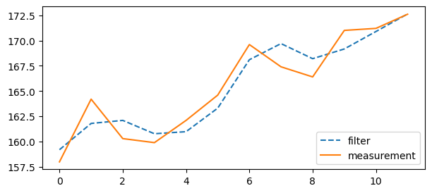
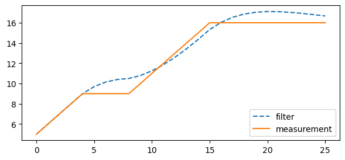

[1]:
import matplotlib.pyplot as plt
import jax.numpy as jnp
from filterjax import GHFilter
[2]:
def plot_gh_filter(measurements, filtered_data, title=""):
plt.figure(figsize=(7, 3))
plt.plot (filtered_data, "--",label="filter")
plt.plot(measurements,label="measurement")
plt.legend(loc=4)
plt.title(title)
plt.show()
[3]:
weights = [
158.0, 164.2, 160.3, 159.9, 162.1, 164.6,
169.6, 167.4, 166.4, 171.0, 171.2, 172.6
]
data = jnp.array(weights)
x0 = 160.
dx = 1.
g = 6/10.
h = 2/3
dt = 1
[4]:
filter = GHFilter(x0, dx, dt, g, h)
filtered_data = filter.update(jnp.array(weights))
[11]:
plot_gh_filter(weights, filtered_data[0])

[5]:
zs = jnp.array([5,6,7,8,9,9,9,9,9,10,11,12,13,14,15,16,16,16,16,16,16,16,16,16,16,16])
filter = GHFilter(4., 1., 1., .302, 0.054)
xs, dxs = filter.update(zs)
[6]:
plot_gh_filter(zs, xs)
